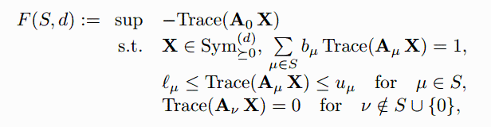
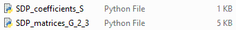

MinMax Problems for optimal coefficients
Not only do we now minimize f but also maximize over the coefficients.
This implies that a finite set S of nonzero weights \mu is defined and the coefficients c_\mu supported on S satisfy some affine constraints, here given by lower and upper bounds \ell_\mu and u_\mu.

The matrices A_0 and A_\mu are the same as above.
As an example, take the following set and constraints.
| > | Type,n := 'G',2; #type, dimension
S:=ChebyshevLevel(Type,n,2); #set of weights S b:=[3,-5]; #[seq(1,i=1..nops(S))]; #coefficients b_\mu LU:=[[-3,2],[6,8]]; #[seq([0,1],i=1..nops(S))]; #lower, upper bounds l_\mu, u_\mu |
| (2.1) |
Step 1: Choose the hierarchy order "d"
Step 2: SDP matrices "A"
Step 3: List of supporting weights "S"
If you followed steps 1-3, you should have two files, "SDP_matrices_G_2_3.py" and "SDP_coefficients_S.py".

To solve the SDP with, for example, python and Mosek (https://docs.mosek.com/latest/pythonapi/index.html), one can use the following code:
(Make sure that the packages cvxpy, numpy, math and the solver MOSEK are installed).
import os; os.chdir('/Users/metzlaff/Documents/Maple/GeneralizedChebyshev Package') #go to the correct directory
import cvxpy as cp
import numpy as np
import math
from SDP_matrices_G_2_3 import A0,A # replace with file name
n,m=len(A0),len(A)
A0 = np.array(A0)
A = [np.array(A[i]) for i in range(m)]
from SDP_coefficients_S import b,L,U # replace with file name
X = cp.Variable((n, n), PSD=True)
objectiveP = -cp.trace(A0@X)
constraintsP = [cp.trace((sum([b[i]*A[i] for i in range(m)]))@X) == 1]
for i in range(m): constraintsP.append(cp.trace(A[i]@X) >= L[i])
for i in range(m): constraintsP.append(cp.trace(A[i]@X) <= U[i])
probP = cp.Problem(cp.Maximize(objectiveP), constraintsP)
vP=probP.solve(solver='MOSEK')
vP
c=np.array([np.trace(A[i]@X.value) for i in L])
for i in range(len(L)): c[i]